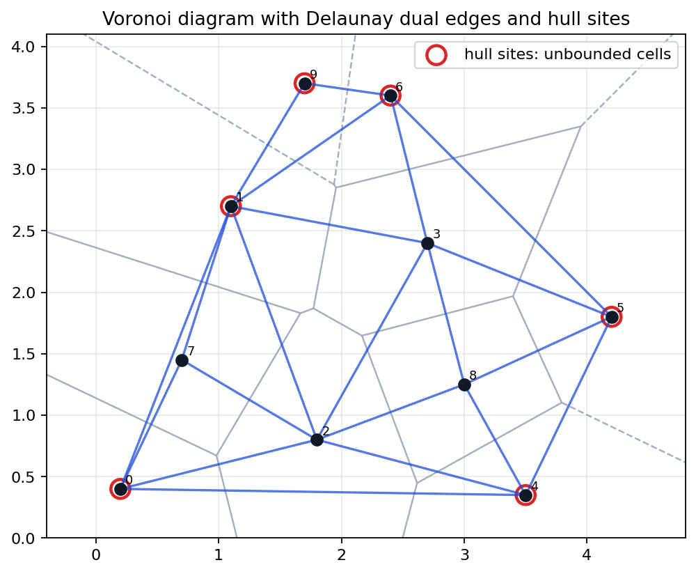
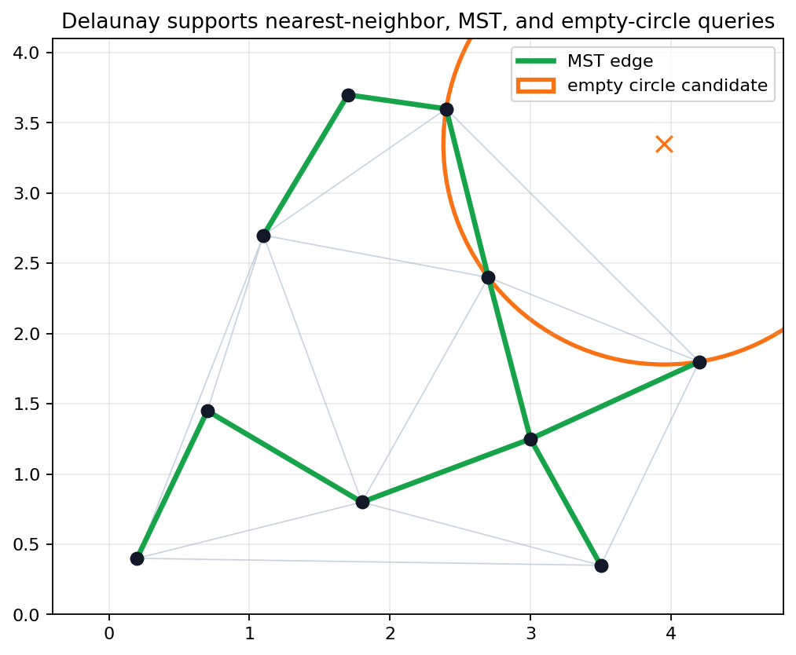
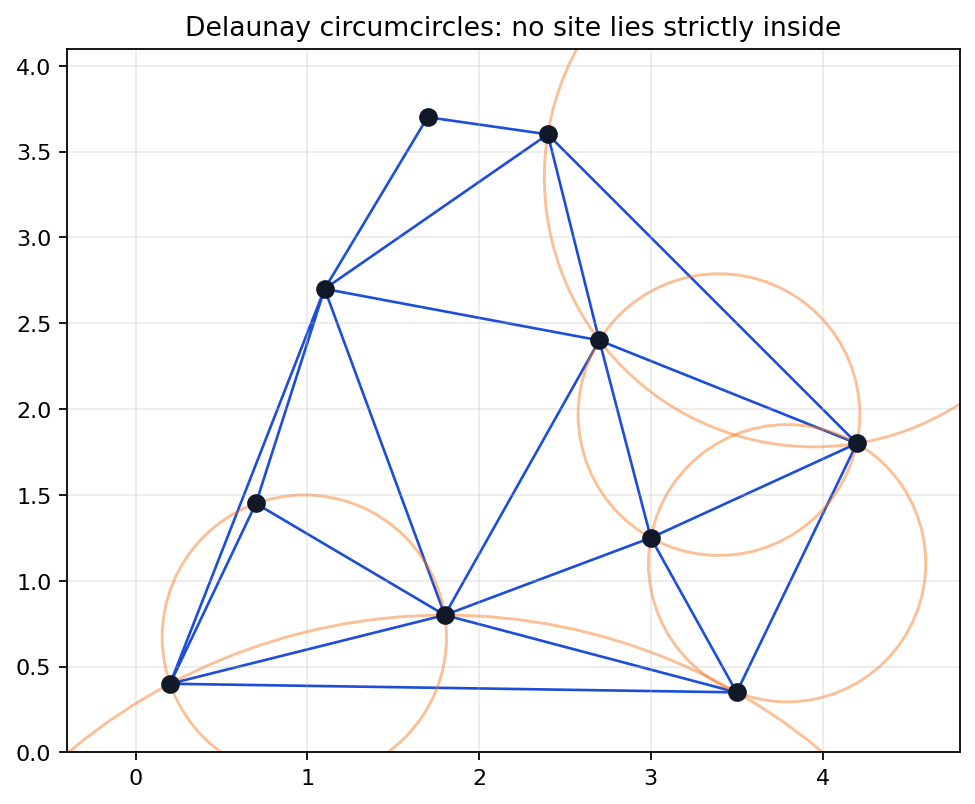
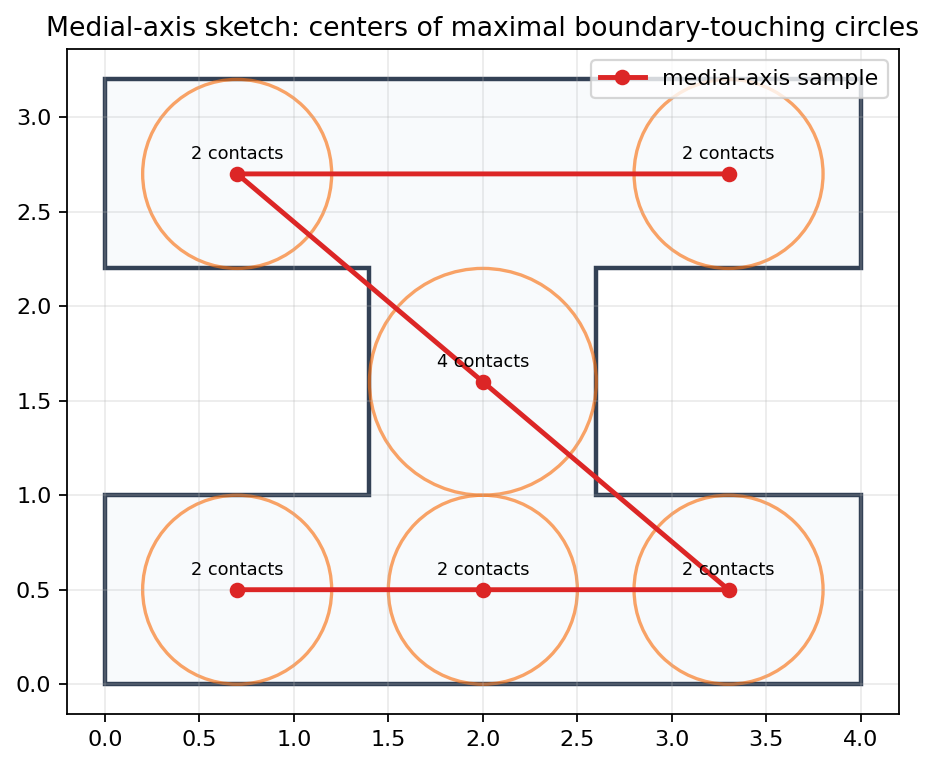
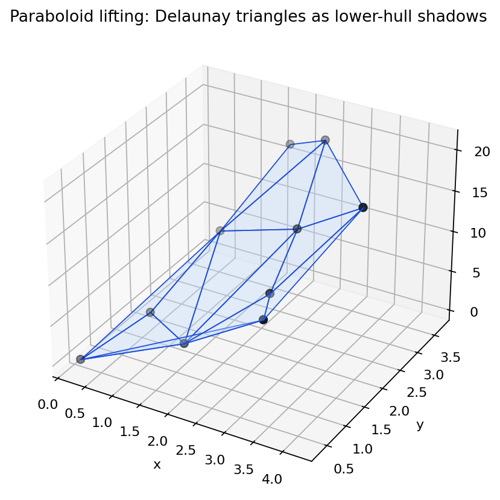

Nearest-site regions become a planar graph; its straight-line dual is certified by empty circles; lifting the sites turns the same geometry into lower convex hull structure.
Teach Voronoi cells as half-plane intersections, Delaunay edges as empty-circle certificates, and paraboloid lifting as the bridge back to convex hull algorithms.
The synthetic artifacts verify dual ridge edges, unbounded hull-site cells, empty circumcircles, graph-containment applications, medial-axis contacts, and lifting checks.


The nearest-neighbor graph is contained in the Delaunay graph, so a local proximity query can be searched through a sparse candidate set.
Every MST edge is also a Delaunay edge in the notebook check, turning a complete graph problem into a planar sparse graph problem.
Voronoi vertices are natural candidates because their radii are limited by three or more sites rather than by a single nearest point.
For a finite site set \(S\) and site \(p_i \in S\), the cell is \[V(p_i)=\{x\in\mathbb{R}^2:\|x-p_i\|\le \|x-p_j\|\text{ for every }p_j\in S\}.\]
A region belongs to one site. Edges are equal-distance bisector pieces. Vertices are points equidistant from three or more sites in general position.
The Voronoi diagram is the collection of all cells and their shared boundaries.
Each comparison \(\|x-p\|\le \|x-q\|\) is one linear half-plane after squaring and canceling \(x\cdot x\).
A single cell can be built by intersecting the \(n-1\) half-planes induced by the other sites.
Repeating that construction independently for every cell is clear but not the fastest chapter algorithm.
A Voronoi cell is unbounded exactly when its site lies on the convex hull of the site set.
Hull sites \(0,1,4,5,6,9\) have unbounded regions; interior sites include bounded regions.
A hull site has an outward direction in which no other site can overtake it; an interior site is blocked in every direction.
If four sites are cocircular, a Voronoi vertex has degree four and the Delaunay triangulation is not unique.
A robust implementation must choose a tie convention, perturbation, or exact symbolic rule before comparing triangulations.
Moving one site across the empty-circle boundary swaps one diagonal for the other while preserving the same quadrilateral boundary.
If Voronoi cells \(V(p_i)\) and \(V(p_j)\) share a boundary edge, draw the straight segment \(p_i p_j\).
The notebook records the same 21 unordered pairs for Voronoi ridge adjacencies and Delaunay edges.
Under nondegenerate assumptions, these straight-line dual edges form a planar triangulation of the site set.
Voronoi diagrams in the plane have linear combinatorial complexity because their Delaunay dual is planar.
Cocircularities may merge vertices or create nonunique triangulations, but a consistent triangulation still gives the same linear-size intuition.

A Delaunay triangle has a circumcircle with no input site strictly inside it. Conversely, empty circles certify Delaunay adjacency under the usual general-position assumptions.
All 12 Delaunay circumcircles are empty, and circumcenters are recorded in the table artifact.
Some clearances are small, so numerical tests need an explicit tolerance or exact predicate strategy in production code.
| Method | Core Idea | Typical Bound |
|---|---|---|
| Per-cell HPI | Intersect nearest-site half-planes. | \(O(n^2\log n)\) |
| Incremental | Insert sites and repair affected cells. | Often \(O(n^2)\) |
| Divide and conquer | Merge diagrams by a bisector chain. | \(O(n\log n)\) |
| Fortune sweep | Maintain beach line of parabolic arcs. | \(O(n\log n)\) |
| Hull lifting | Compute lower convex hull after lifting. | Uses hull machinery |
| Arrangement envelope | Read lower/upper envelopes of planes. | Conceptual dual |
The slide condenses `voronoi-algorithm-map.csv` with original phrasing and the chapter roles preserved.
For a moving sweep line, the frontier consists of points whose distance to a seen site equals their distance to the sweep line.
A new site inserts a new parabolic arc into the beach line.
When an arc disappears, a Voronoi vertex is created and two edges meet.
The sweep is fast because it schedules local events rather than recomputing every cell after each site.
Nearest-neighbor edges and Euclidean MST edges are subgraphs of the Delaunay triangulation.
Build the Delaunay graph first, then run graph algorithms on a sparse planar candidate graph instead of the complete graph.
Inside a bounded search window, a largest empty circle is found among Voronoi vertices and boundary candidates.
Center \((3.95,3.35)\), radius approximately \(1.5700\), and no site lies inside the circle.
If the center can move while increasing the nearest-site distance, then it was not locally maximal. Voronoi vertices are where several nearest constraints meet.

The medial axis is the set of centers with at least two closest boundary contacts, equivalently centers of maximal empty circles inside a shape.
Every sampled medial center has two or more boundary contacts, and the central junction has four contacts.
Replace point sites by boundary features: nearest-feature regions produce the skeleton of the shape.

Send each site \((x,y)\) to \((x,y,x^2+y^2)\) on the paraboloid.
Lower hull facets of the lifted points project to Delaunay triangles in the original plane.
The lifted point count is 10, the Delaunay triangle count is 12, and lifted triangles satisfy the empty-circle check.
The tangent plane to \(z=x^2+y^2\) at a lifted site stores the same linear expression that appeared in the distance comparison.
Taking the relevant envelope of these planes recovers which site is nearest over each part of the plane.
The next chapter's arrangement language studies how many cells, edges, and vertices such surfaces or planes create.
Nearest-site regions are convex intersections of bisector half-planes.
Shared Voronoi edges become Delaunay edges between sites.
Empty circles certify Delaunay triangles and expose degeneracies.
Lower hull facets project back to Delaunay triangles.
Move a site toward cocircularity and watch a Delaunay flip; delete a hull site and rerun the unbounded-cell check; add a point near the largest empty circle and predict the new radius.